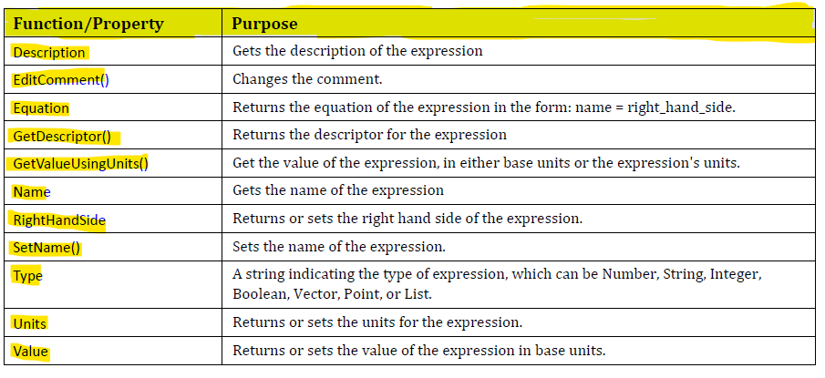

Expression
Expressions are used to establish relationships between different geometric elements or features in a 3D model. They are
a powerful tool for creating parametric designs, where changes to one part of the model can automatically propagate to
other related elements.
Here are some key points about expressions in Siemens NX:
Parameter Definition: Expressions are often used to define parameters such as dimensions, distances, angles, and other
geometric or engineering properties. These parameters can be assigned values or can be linked to other expressions,
creating a network of relationships.
Parametric Modeling: Siemens NX is known for its parametric modeling capabilities. With expressions, you can create
models that adapt to changes dynamically. For example, if you have an expression defining the width of a part, you can
easily change that width by modifying the expression, and the entire model updates accordingly.
Equations and Constraints: Expressions can involve mathematical equations and constraints. You can use them to set up
conditions or rules that govern the behavior of your model. This is particularly useful in ensuring that your design
adheres to specific requirements or standards.
Driving Dimensions: Expressions are often used to drive dimensions. Instead of specifying a fixed numerical value for a
dimension, you can use an expression to make that dimension dependent on other parameters, making your design more
flexible and adaptable.
Editing and Updating: If you need to make changes to your design, you can modify the expressions, and the entire model
will update accordingly. This is a key feature for maintaining design intent and making iterative changes efficiently.
NxOpen Expression Class
All of these various elements of an expression can be controlled using NX Open functions, as follows:

Sample Code
using NXOpen;
namespace Expression
{
public class NewExpression
{
public static void Main(string[] args)
{
Session theSession = Session.GetSession();
Part workPart = theSession.Parts.Work;
ListingWindow lw = theSession.ListingWindow;
NXOpen.ExpressionCollection ExpCollection = workPart.Expressions;
foreach(NXOpen.Expression exp in ExpCollection)
{
lw.WriteLine(exp.Name);
lw.WriteLine(exp.Description);
lw.WriteLine(exp.GetDescriptor());
lw.WriteLine(exp.Value.ToString());
lw.WriteLine(exp.RightHandSide.ToString());
lw.WriteLine(exp.Type);
lw.WriteLine(exp.Units.ToString());
}
}
public static int GetUnloadOption(string args)
{
return (int)NXOpen.Session.LibraryUnloadOption.Immediately;
}
}
}